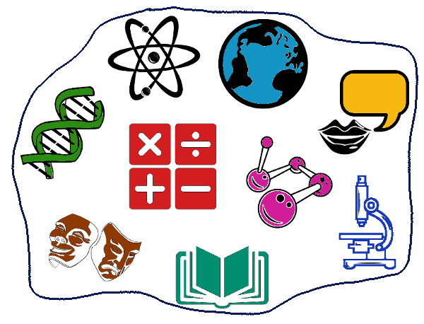

Estuda Comigo
Eu criei o Estuda Comigo para me ajudar e também ajudar outras pessoas a se prepararem para o ENEM, usei toda a minha experiência em programação para criar algo que possa ser utilizado por várias pessoas.

Eu criei o Estuda Comigo para me ajudar e também ajudar outras pessoas a se prepararem para o ENEM, usei toda a minha experiência em programação para criar algo que possa ser utilizado por várias pessoas.

Escolher as matérias mais requeridas pelo curso que você pretende prestar. Como, por exemplo: Matemática, Física e Português.
Dividir as matérias em que você tem mais dificuldade, da mais fácil para a mais difícil. Desse jeito: Matemática 3x (sou ruim), Química 1x (sou ótimo), Física 4x (sou péssimo). Você fará isso para todas as matérias requeridas pelo seu curso.
Você irá pesquisar os pesos de cada matéria para o seu curso, como em Engenharia de Software, que tem peso 4 em Matemática, peso 2 em Redação, Ciências Humanas com peso 1 e Ciências da Natureza com peso 1 também. Após isso, você anotará os pesos de cada matéria e estudará baseado neles e na divisão das matérias.
Você irá revisar as matérias estudadas, fazendo resumos, atividades ou mapas mentais, para assim ajudar a fixar melhor o conteúdo, corrigir falhas, aumentar sua confiança nas matérias e prevenir que esqueça o que estudou.